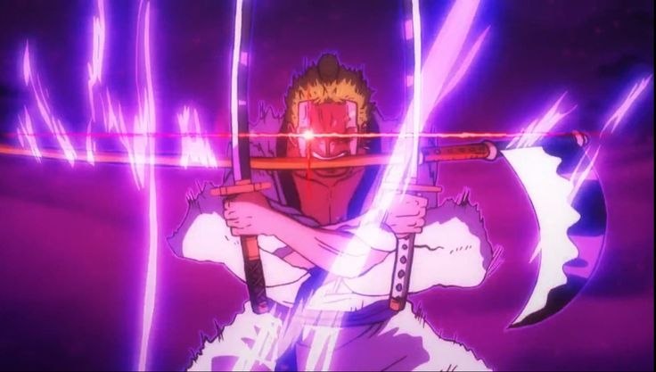

Главный герой аниме и манги One Piece. Основатель капитан Пиратов Соломенной Шляпы, а также один из четырёх лучших бойцовЕго мечта — стать Королём Пиратов, и найти легендарное сокровище Ван Пис, оставленное покойным Королём Пиратов — Гол Д. Роджером. Он верит, что став Королём Пиратов, он станет самым свободным человеком в мире.
Пират, бывший охотник за головами и один из главных протагонистов One Piece.Ророноа Зоро был первым, кто присоединился к Пиратам Соломенной Шляпы и является одним из четырёх сильнейших членов команды, а его мечта — стать величайшим мечником в мире
